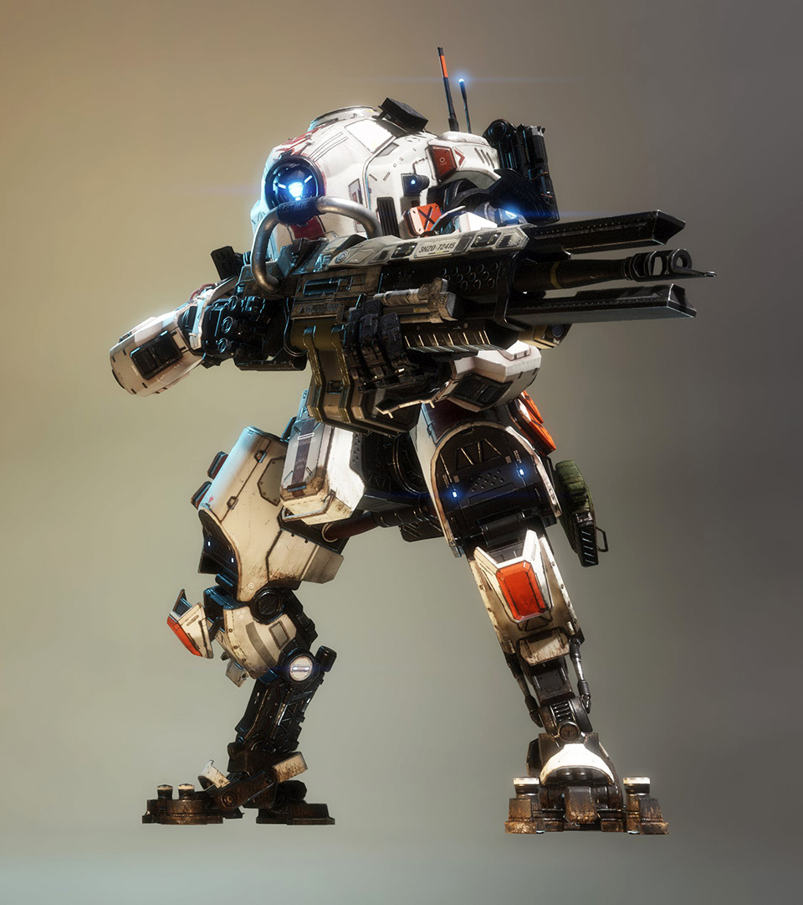

Ion
Class: Atlas. Name: Ion. Weapon: Splitter Rifle
Tone
Ion is a Titan class that is based on the Atlas chassis design. Laser-focused, Ion is all about power. With a central energy system that fuels all of its offensive and defensive abilities, the Ion is an effective, tactical force on The Frontier. Ion's primary weapon is a Splitter Rifle. The Ion has an energy bar that recharges slowly, and almost all of her attacks require using this bar (with the exception of un-split Splitter rifle and, if you have Zero-Point Tripwire, then deploying tripwire). Ion has relatively low damage, but its ability to take the place of almost any role on the battlefield makes this a good titan for beginners (hence the reason why it is first on the titan list, and why it is chosen for you at first.
The Atlas class Titan called Ion is all about Power and fullfilling multiple roles in the team. All the abilities have an energy pool they all take energy from. She has a vortex shield which is very usfull to block and send back all projectile bullets. Ion has a total of one dash but can be upgraded to two with and extra kit. Her Primary weopon shoots plasma that can be split into multple shots but cause it to use energy.
Tone
Class: Atlas. Name: Tone. Weapon: 40mm tracker cannon

Tone
Tone is a Titan class that is based on the Atlas chassis, with a focus on target-locking weapons and rockets. Her 40mm Tracker Cannon still fires semi-automatic explosive shots, but has been upgraded to acquire partial locks on hostile Titans. Her abilities include Tracker Rockets, which fires rockets at fully locked enemies, Sonar Lock, which reveals enemies in an area and establishes partial lock, and Particle Wall, which places a transparent wall in front of Tone that she can shoot through. Her core ability, Salvo Core, fires a heavy barrage of guided rockets, and will gradually orient toward any target Tone looks at. Targets with a partial lock cannot be fired upon with the guided rockets - a full, 3-ring-segment lock must be achieved for offhand weapons to fire.
Tone is a very effective titan in most combat situations. The 40mm Tracker Cannon does moderate damage against other Titans and can kill most pilots in one shot. It's tracker rockets can inflict large amounts of damage against all titans and can easily destroy its enemies in a short amount of time if manages to repeat this process enough. The Particle Wall can buy Tone a window of time for it inflict damage to other titans without suffering damage itself as Tone must expose itself in order to lock on to and fire rockets at enemies, the cover it provides is invaluable. Sonar Pulse can help scout out enemies that may be nearby and can help prepare for a coming battle or get the drop on an enemy, as well as granting a third of a lock-on. Tone's Salvo Core can inflict a massive amount of damage onto a single target as well suppress a group of enemy titans if outnumbered.
Tone is most effective in medium range combat and is generally is ill-suited for close-range engagements against Titans such as Ronin or Legion. If cornered it recommended to dash out as soon as possible and try to repel them with the cannon and rockets. This strategy generally works well against Stryder and Atlas class Titans as they will take huge chunks of damage and at times will give players the opportunity to destroy them if they can inflict enough damage. Against one of the Ogre class Titans however, it is recommended to get a bit more distance or fall back if Tone's chassis is too damaged, as Scorch and Legion will normally have enough health to withstand any retaliatory damage Tone could inflict on them and can recover long enough to destroy Tone.
Monarch
Class: Atlas. Name: Monarch. Weapon: XO16A2 Chaingun

Monarch
Monarch’s design is based on the salvaged, badly burnt remains of two Vanguard-class Titans recovered by the IMC from the Battle of Typhon. While the Vanguard-class was designed by the Militia for armed recon deep behind enemy lines, the IMC’s mandate for Monarch focused on flexibility through survival and support options, to serve many operational roles.
One of these innovations is her Upgrade Core, which allows her to improve her combat abilities during a battle, based on options set by her Pilot. Monarch also has an impressive ability to draw power from enemy Titans to recharge her own shields, or the shields of her friendly Titans. Despite the IMC and Vinson Dynamics' efforts to maintain secrecy, several shipments of early Monarch production variants invariably leaked onto the black market, allowing mercenary Pilots and independent manufacturers across the Frontier to discover her true potential.
Monarch is a mid-range Vanguard-class Titan that can upgrade itself on the battlefield through her unique Upgrade Core. Pilots select a path of upgrades and try to survive long enough to reach her final form. Monarch's design is based on the salvaged, badly burnt remains of two Vanguard-class Titans recovered by the IMC from the Battle of Typhon. While the Vanguard-class was designed by the Militia for armed recon deep behind enemy lines, the IMC's mandate for Monarch focused on flexibility through survival and support options, to serve many operational roles. Although Vinson Dynamics* was unable to reverse-engineer and replicate key aspects of the original Vanguard design, they brought their own R&D innovations when creating Monarch.
Northstar
Class: Stryder. Name:Northstar. Weapon:Plasma Railgun

Northstar
Northstar is a Titan class that is based on the Stryder chassis design. Northstar is built on high mobility and precision attacks with her railgun and cluster missiles, and can perform vertical takeoffs and landings to reach more advantageous positions. The Northstar chassis, by default, is only capable of a short VTOL-style hover, which she can use to gain an elevated sniping position or rain missiles down on the enemy. A more standard modification for the majority of Pilots is the Viper Thrusters, which allow Northstar increased speed and longer flight times while in VTOL.
Northstar's primary weapon is the Plasma Railgun which deals small damage if fired immediately. Northstar is my Second Personal favorite Titan Northstar is a stryder class so she is one of the fast ones but slower if compared to Ronin. Northstar is like a Sniper.
Ronin
Class: Stryder. Name: Ronin. Weapon: Leadwall and Sword

Ronin
Ronin is a Titan class that is based on the Stryder chassis design. Ronin is a hit and run specialist. He can do a lot of damage in short bursts, but his fragility makes it suboptimal to stay in range for long. His speed, combined with Arc Wave's ability to slow, gives him the tools to get into and out of any fight. Ronin's primary weapon is the Leadwall.
Ronin is also a Stryder class titan and the fastest titan. He has two dashes normaly plus his Phase Dash which makes him immune to any damage which can count as an extra dash plus they can equip an extra dash to have three plus the Phase Dash which is a Total of Four Dashes. He is a hit and Run style Titan. He uses a leadwall shotgun and a BroadSword which gives him extra Range than all other Titans
His Leadwall is very strong but only has Four shots till he has to reload. One of his tools that makes him Fast is His Phase Dash to give him an extra dash. His second tool can be used as a way to get closer to his enemies which is Sword Block which makes it so he can reduce any damage he takes by 75%. His last ability is a way to start a fight which is Arc wave which shoots out electricity across the floor which damages, stuns, and breaks through any shields.
Legion
Class: Ogre. Name: Legion. Weapon: Predator Cannon.
Legion
Legion specializes in both offensive and defensive combat in most situations. When fighting offensively, it is best to to initiate pushes as the first one into the fight, chewing through defensive abilities and working to expose Titans so Legion can inflict severe damage to enemies. Hidden Compartment or Enhanced Ammo Capacity are useful in emphasizing this role. When fighting defensively, Legion can be especially lethal when holding off enemies at long range, and his Smart Core can make short work of both Pilots and Titans trying to get close. Based on the Ogre chassis, Legion is slow to react and move as his gun must first "spin up" before firing, as do most of his other abilities; care must be taken to plan your ability use. Much of this can be mitigated by equipping Turbo Engine, which provides much needed agility, and the ability to shift into and out of cover.
Legion's cannon can deal tremendous damage at any range and the chassis can take a vast amount of damage in return, making it great for pushing lanes whilst attracting the enemies' fire. His Gun Shield can also provide much needed protection when taking fire or reloading. The titan's rate of fire, combined with the power shot, make for the highest damage potential of any titan in game. Switching firing modes takes time and can leave Legion open to attacks, especially at close range. It is best to switch firing modes while enemy Titans are at a distance.
Legion is a Titan class that is based on the Ogre chassis design, focusing on inexorable advances, dealing damage and controlling combat zones. He wields the Predator Cannon, which is equipped with short and long range ammo variations. His ordnance is known as Power Shot. While in short range mode, he fires a shotgun-like spray, which is great for taking out nearby pilots. While in long range mode, the shot is similar to the Plasma Railgun's projectile. The minigun is also equipped with a protective Gun Shield capable of absorbing a fair amount of damage.
Scorch
Class: Ogre. Name: Scorch. Weapon: thermite launcher.
Scorch
Short for "Scorched Earth", Scorch's primary offensive and defensive weapon is fire. Blunt and direct, Scorch can chain his abilities to force enemies out of cover, or trap them to deal maximum damage.
Scorch is a Titan class that is based on the Ogre chassis design. Scorch's primary defensive and offensive weapon is fire. Blunt and direct, Scorch can chain his abilities to force enemies out of cover, or trap them to deal maximum damage. Scorch achieves this using his primary weapon, the T-203 Thermite Launcher; a single-shot, break-action grenade launcher designed specifically for use with this Titan.
Being a Titan with an Ogre-based chassis design, Scorch can endure much damage before being reduced to a doomed state. This is offset by the Titan being rather slow and having a wide, easy-to-damage hitbox.
Scorch's area denial effects make it a prime choice to use as a defensive-based titan; its slow movement and slow attacks make it somewhat harder to attack with. Combine this with an Assault Chip to turn Scorch into a reliable defensive sentry for modes like Capture the Flag and Frontier Defense.
The T-203 Thermite Launcher does an average amount of damage, but also deals damage over time to any Titan that walks over the patch of thermite it leaves behind after its grenades detonate.
Without the Tempered Plating mod, Scorch will take damage when standing in any of his own thermite, regardless of what ability created it. Thus, resist the urge to chase a retreating Titan if you still have thermite on the ground between you two.
Outside of medium range, the Thermite Launcher is fairly fickle to aim, as the Pilot using the Scorch in question must account for both travel time and projectile drop. This is somewhat offset by the fact that aiming produces holographic trajectory line, similarly to the R-6P Softball and grenades when using Ordnance Expert.